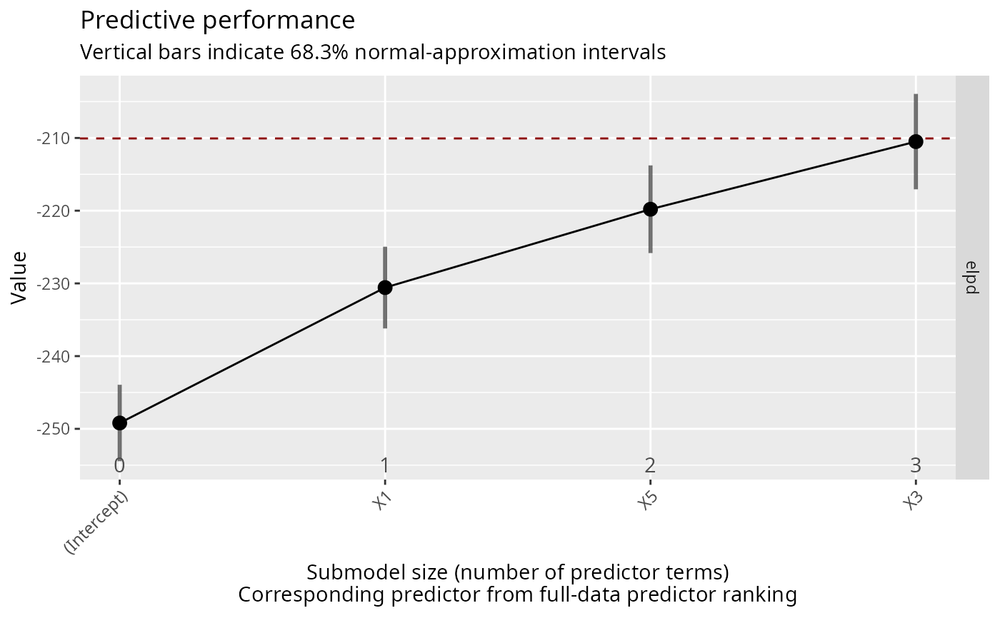

This is the plot() method for vsel objects (returned by varsel() or
cv_varsel()). It visualizes the predictive performance of the reference
model (possibly also that of some other "baseline" model) and that of the
submodels along the full-data predictor ranking. Basic information about the
(CV) variability in the ranking of the predictors is included as well (if
available; inferred from cv_proportions()). For a tabular representation,
see summary.vsel().
# S3 method for vsel
plot(
x,
nterms_max = NULL,
stats = "elpd",
deltas = FALSE,
alpha = 2 * pnorm(-1),
baseline = if (!inherits(x$refmodel, "datafit")) "ref" else "best",
thres_elpd = NA,
resp_oscale = TRUE,
ranking_nterms_max = NULL,
ranking_abbreviate = FALSE,
ranking_abbreviate_args = list(),
ranking_repel = NULL,
ranking_repel_args = list(),
cumulate = FALSE,
text_angle = NULL,
...
)An object of class vsel (returned by varsel() or cv_varsel()).
Maximum submodel size (number of predictor terms) for which
the performance statistics are calculated. Using NULL is effectively the
same as length(ranking(object)[["fulldata"]]). Note that nterms_max
does not count the intercept, so use nterms_max = 0 for the
intercept-only model. For plot.vsel(), nterms_max must be at least 1.
One or more character strings determining which performance
statistics (i.e., utilities or losses) to estimate based on the
observations in the evaluation (or "test") set (in case of
cross-validation, these are all observations because they are partitioned
into multiple test sets; in case of varsel() with d_test = NULL, these
are again all observations because the test set is the same as the training
set). Available statistics are:
"elpd": expected log (pointwise) predictive density (for a new
dataset). Estimated by the sum of the observation-specific log predictive
density values (with each of these predictive density values being
a---possibly weighted---average across the parameter draws).
"mlpd": mean log predictive density, that is, "elpd" divided by the
number of observations.
"mse": mean squared error (only available in the situations mentioned
in section "Details" below).
"rmse": root mean squared error (only available in the situations
mentioned in section "Details" below). For the corresponding standard error
and lower and upper confidence interval bounds, bootstrapping is used.
"acc" (or its alias, "pctcorr"): classification accuracy (only
available in the situations mentioned in section "Details" below).
"auc": area under the ROC curve (only available in the situations
mentioned in section "Details" below). For the corresponding standard error
and lower and upper confidence interval bounds, bootstrapping is used.
If TRUE, the submodel statistics are estimated as differences
from the baseline model (see argument baseline). With a "difference
from the baseline model", we mean to take the submodel statistic minus
the baseline model statistic (not the other way round).
A number determining the (nominal) coverage 1 - alpha of the
normal-approximation (or bootstrap; see argument stats) confidence
intervals. For example, in case of the normal approximation, alpha = 2 * pnorm(-1) corresponds to a confidence interval stretching by one standard
error on either side of the point estimate.
For summary.vsel(): Only relevant if deltas is TRUE.
For plot.vsel(): Always relevant. Either "ref" or "best", indicating
whether the baseline is the reference model or the best submodel found (in
terms of stats[1]), respectively.
Only relevant if any(stats %in% c("elpd", "mlpd")). The
threshold for the ELPD difference (taking the submodel's ELPD minus the
baseline model's ELPD) above which the submodel's ELPD is considered to be
close enough to the baseline model's ELPD. An equivalent rule is applied in
case of the MLPD. See suggest_size() for a formalization. Supplying NA
deactivates this.
Only relevant for the latent projection. A single logical
value indicating whether to calculate the performance statistics on the
original response scale (TRUE) or on latent scale (FALSE).
Maximum submodel size (number of predictor terms)
for which the predictor names and the corresponding ranking proportions are
added on the x-axis. Using NULL is effectively the same as using
nterms_max. Using NA causes the predictor names and the corresponding
ranking proportions to be omitted. Note that ranking_nterms_max does not
count the intercept, so ranking_nterms_max = 1 corresponds to the
submodel consisting of the first (non-intercept) predictor term.
A single logical value indicating whether the
predictor names in the full-data predictor ranking should be abbreviated by
abbreviate() (TRUE) or not (FALSE). See also argument
ranking_abbreviate_args and section "Value".
A list of arguments (except for names.arg)
to be passed to abbreviate() in case of ranking_abbreviate = TRUE.
Either NULL, "text", or "label". By NULL, the
full-data predictor ranking and the corresponding ranking proportions are
placed below the x-axis. By "text" or "label", they are placed within
the plotting area, using ggrepel::geom_text_repel() or
ggrepel::geom_label_repel(), respectively. See also argument
ranking_repel_args.
A list of arguments (except for mapping) to be
passed to ggrepel::geom_text_repel() or ggrepel::geom_label_repel() in
case of ranking_repel = "text" or ranking_repel = "label",
respectively.
Passed to argument cumulate of cv_proportions(). Affects
the ranking proportions given on the x-axis (below the full-data predictor
ranking).
Passed to argument angle of ggplot2::element_text() for
the x-axis tick labels. In case of long predictor names (and/or large
nterms_max), text_angle = 45 might be helpful (for example).
Arguments passed to the internal function which is used for
bootstrapping (if applicable; see argument stats). Currently, relevant
arguments are B (the number of bootstrap samples, defaulting to 2000)
and seed (see set.seed(), but defaulting to NA so that set.seed()
is not called within that function at all).
A ggplot2 plotting object (of class gg and ggplot). If
ranking_abbreviate is TRUE, the output of abbreviate() is stored in
an attribute called projpred_ranking_abbreviated (to allow the
abbreviations to be easily mapped back to the original predictor names).
The stats options "mse" and "rmse" are only available for:
the traditional projection,
the latent projection with resp_oscale = FALSE,
the latent projection with resp_oscale = TRUE in combination with
<refmodel>$family$cats being NULL.
The stats option "acc" (= "pctcorr") is only available for:
the binomial() family in case of the traditional projection,
all families in case of the augmented-data projection,
the binomial() family (on the original response scale) in case of the
latent projection with resp_oscale = TRUE in combination with
<refmodel>$family$cats being NULL,
all families (on the original response scale) in case of the latent
projection with resp_oscale = TRUE in combination with
<refmodel>$family$cats being not NULL.
The stats option "auc" is only available for:
the binomial() family in case of the traditional projection,
the binomial() family (on the original response scale) in case of the
latent projection with resp_oscale = TRUE in combination with
<refmodel>$family$cats being NULL.
As long as the reference model's performance is computable, it is always
shown in the plot as a dashed red horizontal line. If baseline = "best",
the baseline model's performance is shown as a dotted black horizontal line.
If !is.na(thres_elpd) and any(stats %in% c("elpd", "mlpd")), the value
supplied to thres_elpd (which is automatically adapted internally in case
of the MLPD or deltas = FALSE) is shown as a dot-dashed gray horizontal
line for the reference model and, if baseline = "best", as a long-dashed
green horizontal line for the baseline model.
if (requireNamespace("rstanarm", quietly = TRUE)) {
# Data:
dat_gauss <- data.frame(y = df_gaussian$y, df_gaussian$x)
# The "stanreg" fit which will be used as the reference model (with small
# values for `chains` and `iter`, but only for technical reasons in this
# example; this is not recommended in general):
fit <- rstanarm::stan_glm(
y ~ X1 + X2 + X3 + X4 + X5, family = gaussian(), data = dat_gauss,
QR = TRUE, chains = 2, iter = 500, refresh = 0, seed = 9876
)
# Run varsel() (here without cross-validation and with small values for
# `nterms_max`, `nclusters`, and `nclusters_pred`, but only for the sake of
# speed in this example; this is not recommended in general):
vs <- varsel(fit, nterms_max = 3, nclusters = 5, nclusters_pred = 10,
seed = 5555)
print(plot(vs))
}
#> -----
#> Running the search ...
#> -----
#> -----
#> For performance evaluation: Re-projecting onto the submodels along the solution path ...
#> -----
